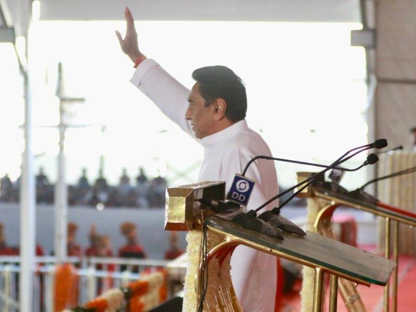

A Legacy of Governance, Development, and Statesmanship
Nine consecutive victories from Chhindwara make Kamal Nath one of the longest-serving Members of Parliament in Indian history, a feat that stands as a testament to the unwavering trust of his constituents.
Kamal Nath's parliamentary journey is nothing short of extraordinary. First elected to the Lok Sabha from Chhindwara in 1980, he went on to win the seat an unprecedented nine consecutive times -- in 1980, 1984, 1989, 1991, 1996, 1998, 1999, 2004, and 2014. This remarkable record places him among the elite handful of parliamentarians who have represented the same constituency for over four decades, a distinction that speaks volumes about the depth of connection between the leader and his people.
What makes this achievement particularly noteworthy is the political landscape of Chhindwara itself. Situated in Madhya Pradesh, a state that has been largely dominated by the Bharatiya Janata Party for extended periods, Chhindwara remained a bastion of support for Kamal Nath and the Indian National Congress. This ability to consistently win in what could be described as hostile political territory underscores his extraordinary personal appeal, his grassroots connect, and his relentless focus on constituency development.
Throughout his parliamentary career, Kamal Nath served on numerous standing committees and select committees, contributing to legislation across domains ranging from commerce and industry to foreign affairs. He was known for his incisive interventions in parliamentary debates, often bringing an international perspective shaped by his extensive global exposure. His understanding of trade policy, economic reform, and infrastructure development enriched the quality of legislative discourse in the House.
Democracy is not merely about winning elections. It is about earning the trust of the people every single day, through actions that transform their lives and uphold their dignity.
-- Kamal NathAs Union Minister of Commerce and Industry, Kamal Nath transformed India's position on the world trade stage, championing the interests of developing nations while propelling Indian exports to unprecedented heights.
The period from 2004 to 2009 marked a defining chapter in India's economic evolution, and at the helm of the nation's commerce and trade apparatus stood Kamal Nath. As Union Minister of Commerce and Industry under Prime Minister Manmohan Singh's government, he presided over one of the most dynamic periods of trade expansion in independent India's history. India's total foreign trade grew from approximately $195 billion in 2004-05 to over $500 billion by 2008-09, representing a growth of over 150% during his tenure -- a transformation that positioned India as a serious player in the global economic order.
Under his stewardship, India's merchandise exports surged, with the country becoming one of the fastest-growing exporters in the world. He launched several export promotion initiatives, streamlined trade facilitation procedures, and worked tirelessly to reduce the transaction costs that had long hampered Indian businesses seeking to compete on the global stage. The Focus Market Scheme, Focus Product Scheme, and other targeted interventions under the Foreign Trade Policy helped diversify India's export basket and expand its reach into new markets across Africa, Latin America, and Southeast Asia.
Perhaps Kamal Nath's most enduring legacy from his tenure as Commerce Minister is the role he played as a champion of the developing world on the global trade stage. At the WTO, he was instrumental in forming the G-20 coalition of developing countries -- not to be confused with the G-20 heads of state forum -- that fundamentally altered the dynamics of multilateral trade negotiations. This coalition, which included nations like Brazil, China, South Africa, and Argentina, stood firm against the agricultural protectionism of the United States and European Union, demanding that any trade agreement genuinely serve the interests of the world's poorest farmers.
His negotiating acumen earned him international recognition. Newspapers and trade journals across the world profiled him as one of the most formidable trade negotiators of his generation. Pascal Lamy, the Director-General of the WTO, acknowledged his critical role in shaping the Doha Round discussions. The New York Times, Financial Times, and The Economist all noted his ability to build consensus among disparate developing nations while holding firm on core principles of equity and fairness.
During this period, Kamal Nath also authored the widely acclaimed book "India's Century: The Age of Entrepreneurship in the World's Biggest Democracy", published internationally. The book presented a compelling vision of India's economic potential, arguing that the 21st century would be defined by India's rise as a global economic powerhouse. Drawing on his extensive experience in government, trade negotiations, and interactions with global business leaders, the book articulated a roadmap for India to harness its demographic dividend, entrepreneurial energy, and democratic resilience to achieve sustained and inclusive growth. It was translated into multiple languages and received critical acclaim from economists, policymakers, and business leaders worldwide.
The developing world cannot be expected to open its markets while the developed world keeps its own markets shut. Trade must be fair before it can be free.
-- Kamal Nath, at WTO Cancun 2003As Union Minister of Urban Development, Kamal Nath accelerated India's urban transformation through infrastructure modernization, metro rail expansion, and visionary housing initiatives.
When Kamal Nath took charge of the Ministry of Urban Development in 2009, India's cities were at a crossroads. Rapid urbanization was straining infrastructure to breaking point, while governance frameworks remained rooted in an era of slow, incremental growth. He brought to the ministry the same dynamism and results-oriented approach that had characterized his tenure at Commerce, recognizing that India's economic future would be determined in its cities.
His vision for urban India was comprehensive and forward-looking. He pushed for the adoption of smart city principles years before the concept became a formal government program. He advocated for technology-driven urban management, integrated land-use planning, and sustainable development practices that balanced economic growth with environmental responsibility. His emphasis on public transport over private vehicles, green building standards, and walkable urban design reflected a sophistication in urban policy thinking that was ahead of its time.
Under his leadership, the ministry also undertook significant reforms in urban governance. He pushed for the empowerment of urban local bodies, arguing that India's cities needed stronger, more autonomous, and more accountable municipal governments. He championed the use of Geographic Information Systems (GIS) for urban planning, e-governance platforms for citizen services, and performance-based funding mechanisms that rewarded cities for implementing reforms.
Kamal Nath recognized that India's urban infrastructure needed a quantum leap, not incremental improvements. He pushed for world-class standards in road construction, water supply systems, and sewage treatment within Indian cities. His insistence on time-bound project completion and regular monitoring resulted in a measurable acceleration in the pace of urban infrastructure delivery. He also initiated discussions on Public-Private Partnership models for urban infrastructure, recognizing that government resources alone would be insufficient to meet the staggering investment needs of India's growing cities.
The legacy of his tenure at Urban Development extends beyond specific projects. He fundamentally shifted the discourse around urban governance in India, making it a priority in policy conversations and establishing frameworks that subsequent governments built upon. His early advocacy for smart, sustainable, and inclusive urban development laid the intellectual groundwork for many of the urban programs that followed.
In his tenure as Chief Minister, Kamal Nath implemented transformative welfare schemes, revitalized the economy, and brought a new era of inclusive governance to Madhya Pradesh.
The 2018 Madhya Pradesh Assembly elections marked a watershed moment in the state's political history. After fifteen years of BJP rule, the people of Madhya Pradesh placed their trust in the Indian National Congress under the leadership of Kamal Nath, who was sworn in as the Chief Minister on December 17, 2018. Despite the brevity of his tenure -- curtailed by political developments in March 2020 -- the impact of his governance was profound and far-reaching, particularly for the state's farming communities, unorganized workers, and economically disadvantaged populations.
Understanding that sustainable welfare requires a strong economic foundation, Kamal Nath moved swiftly to position Madhya Pradesh as an investment destination. He organized the Magnificent Madhya Pradesh investor summit, which attracted commitments of investment worth thousands of crores from domestic and international corporations. His experience as a former Commerce Minister gave him unique credibility with the business community, and he personally engaged with major industrialists to bring investment to the state.
He launched initiatives to promote food processing, pharmaceuticals, textiles, and IT in the state, leveraging Madhya Pradesh's agricultural abundance and strategic central location. Streamlined approval processes, single-window clearance systems, and sector-specific incentive packages were introduced to create a business-friendly environment. His vision was to transform Madhya Pradesh from an agrarian state into a diversified economy with robust industrial and services sectors.
Despite the limited time available, Kamal Nath initiated several significant infrastructure projects in Madhya Pradesh. Road construction and upgradation programs were launched across the state, with particular emphasis on connecting tribal and rural areas to major economic centers. He pushed for the expansion of the state highway network, improvement of urban roads in major cities, and the construction of bridges and flyovers to ease congestion in growing urban centers.
He also prioritized healthcare infrastructure, initiating the upgradation of district hospitals and primary health centers. Recognizing the critical shortage of medical facilities in rural Madhya Pradesh, he launched programs to establish new health centers in underserved areas and recruit medical professionals through attractive incentive packages.
A government's true measure is not in the statistics it produces, but in the tears it wipes and the hopes it kindles in the hearts of the most vulnerable.
-- Kamal NathThe transformation of Chhindwara from one of India's most underdeveloped tribal districts into a model of modern development stands as perhaps the most tangible and enduring legacy of Kamal Nath's five decades in public life.
When Kamal Nath first contested from Chhindwara in 1980, the district was classified among the most backward in India. A predominantly tribal region in the heart of central India, it suffered from abysmal road connectivity, virtually no industrial base, limited educational infrastructure, inadequate healthcare facilities, and chronic economic underdevelopment. The transformation that unfolded over the subsequent four decades is a story of sustained vision, relentless effort, and the power of committed political leadership to reshape the trajectory of an entire region.
Kamal Nath's contributions to global trade diplomacy and economic policy have earned him recognition as one of the most formidable and respected statesmen in international economic affairs.
Beyond the borders of India, Kamal Nath is recognized as a statesman of considerable international standing. His role in WTO negotiations during the Cancun and Hong Kong Ministerial Conferences established him as a formidable trade diplomat who could hold his own against the most experienced negotiators from the United States, European Union, and Japan. International media, including The New York Times, Financial Times, The Economist, and Bloomberg, have profiled him extensively as a key architect of the developing world's trade strategy.
His participation in G-20 trade discussions, bilateral trade negotiations with major economies, and engagement with multilateral institutions like the World Bank and International Monetary Fund further enhanced India's standing in the global economic order. He was a regular fixture at the World Economic Forum in Davos, where he articulated India's economic vision to global business and political leaders. His ability to engage with equal fluency on subjects ranging from agricultural subsidies to intellectual property rights to services trade liberalization made him a uniquely versatile trade diplomat.
Kamal Nath's intellectual contributions to economic policy discourse have been significant. His book "India's Century" was widely reviewed and discussed in academic and policy circles worldwide. He has been a prolific contributor to international forums, conferences, and publications, sharing his perspectives on trade, development, globalization, and India's role in the emerging world order. His speeches at institutions like the Brookings Institution, Council on Foreign Relations, and London School of Economics have been well received, reflecting a depth of analysis and breadth of vision that transcends partisan politics.
International trade bodies, academic institutions, and policy think tanks have regularly invited him to share his insights on South-South cooperation, trade and development, and the future of multilateral trade governance. His advocacy for a more equitable global trade system that genuinely serves the interests of the world's poorest nations continues to resonate in policy discussions around the world.
While the true measure of a public servant's legacy lies in the lives transformed and communities uplifted, formal recognitions serve as markers of the impact made on the national and international stage.
The best governance is that which reaches the last person in the last row. Everything else is merely administration.
-- Kamal Nath